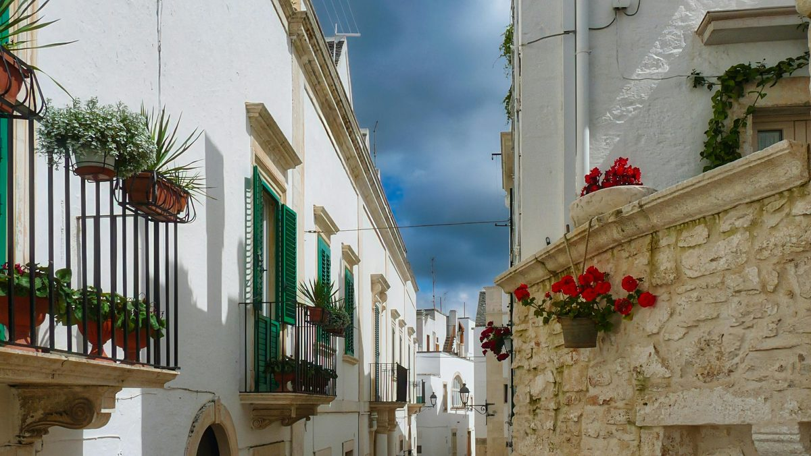

Day 9 — Slow Morning + Ostuni + Il Frantoio
Friday, May 29, 2026

PLACES & MAP LINKS — tap any place to open in Google Maps
🅿️ Parking — ~3:45 PM — 📍 Largo Lanza parking (Ostuni)
Park near upper old town. Backup: Foro Boario lot.
📸 Sight — 📍 Piazza della Libertà (Ostuni)
Main piazza. Wheelchair accessible from upper old town entrance.
⛪ Sight — 📍 Cathedral of Ostuni
Hilltop view, terraces below cathedral are accessible.
🍴 Dinner — 8:15 PM — 📍 Masseria Il Frantoio
SS16 km 874. Tasting menu. ~15 min from Ostuni. Confirmed.
SIDE QUESTS
⚡ 📍 Ostuni white alleys side-quest (Rob & Maddison only)
After exploring the upper old town together, parents settle at a café in Piazza della Libertà. Rob/Maddison wander the stepped white alleys deeper into the centro storico. Return to the same café.
⚡ 📍 Il Frantoio garden walk at golden hour (parents can join)
Arrive at Il Frantoio early and walk the olive groves and herb gardens. Mostly level paths. Best light of the day on the trees. A real shared moment before the long dinner.
CONTACTS
Il Frantoio: +39 0831 330276 / prenota@masseriailfrantoio.it
NOTES
- Friday is intentionally a chill day — Saturday's drive to Castello di Septe is long.
- Ostuni's stepped white alleys — Maddison/Rob side-quest (~30 min).
- Il Frantoio is a working olive oil estate. Walk grounds at golden hour before dinner.
- Tasting menu: 8 courses traditional Pugliese. Allow ~3 hours for the meal.
- One glass of wine, not three — Saturday is a long driving day.
- Drive back to Borgobianco ~25 min after dinner.